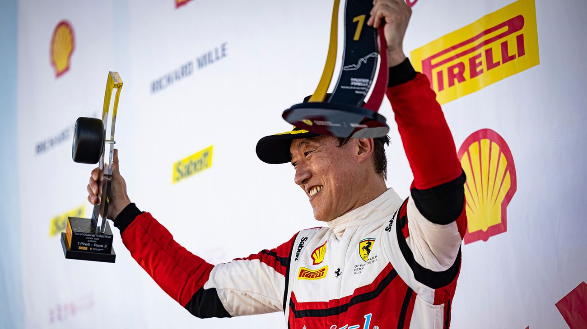
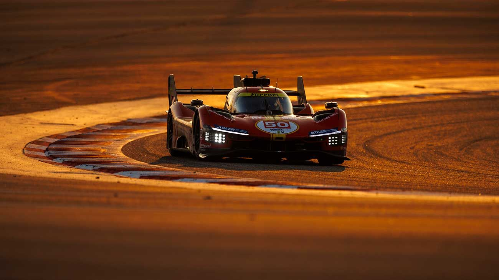

NEWS

NUMBER 50 AND 51 FERRARI 499P DRIVERS CONFIRMED FOR FIA WEC 2024
The Ferrari - AF Corse team is set to participate in the FIA WEC 2024,
fielding the 499Ps with the same drivers who played key roles in the
previous world championship season. Antonio Fuoco, Miguel Molina and
Nicklas Nielsen will share the number 50 car, while Alessandro Pier
Guidi, James Calado and Antonio Giovinazzi will start in the number
51.
READ MORE

UCHIDA DOMINATES IN THE LAND OF THE RISING SUN
With eight victories and one second-place finish over the course of
the nine races held, Yudai Uchida has made his mark on the first page
of the winners’ roster of the Ferrari Challenge Japan – the national
series inaugurated in 2023. For Uchida, it is his third title in five
years of competing in the Ferrari Challenge, as the Japanese champion
won the Asia Pacific series in both 2020 and 2022, while also
achieving success in the last...
READ MORE

MORROW CROWNS BRILLIANT SEASON WITH TITLE WIN
Andrew Morrow celebrated the British title of the Ferrari Challenge
Trofeo Pirelli at the end of a thrilling race on European soil at the
iconic Spa-Francorchamps circuit, which hosted the final round in
September 2023. Finishing second under the chequered flag in the final
race of the season meant Morrow clinched the British title in his
first full season in the Prancing Horse's one-make series.
READ MORE

THE 2023 OF #50 499P, AS TOLD BY FUOCO, MOLINA AND NIELSEN
The Ferrari 499P number 50’s calling card was a pole position in its
FIA WEC debut, clocking the fastest qualifying time in round one at
Sebring. Antonio Fuoco, Miguel Molina, and Nicklas Nielsen repeated
this result at Le Mans, taking the Hyperpole. These results, along
with the four season podiums, gave the crew third place in the
standings of the Drivers’ championship and contributed to Ferrari’s
runner-up spot in the Manufacturers’ championship.
READ MORE

RELIVE THE 8 HOURS OF BAHRAIN WITH “THE RED LINE”
The epilogue to a year marked by prestigious results in the FIA WEC
2023 took place at the Sakhir track, the venue of the 8 Hours of
Bahrain. The latest episode of “The Red Line”, the series that tells
the behind-the-scenes story of the Ferrari – AF Corse team, looks back
at an event held on the circuit in the Persian Gulf in early November.
READ MORE

FERRARI PUROSANGUE: GRAND TOUR OF NEW ZEALAND CONCLUDES
The Ferrari New Zealand Grand Tour, which saw the Maranello marque
embark on a voyage of rediscovery of the spectacular Southern
Hemisphere islands between late November and early December, has now
come to a successful conclusion. Five Ferrari Purosangues each covered
3000 km over three weeks as they explored New Zealand’s extraordinary
natural landscapes, scenic mountain roads and culture-rich cities.
READ MORE